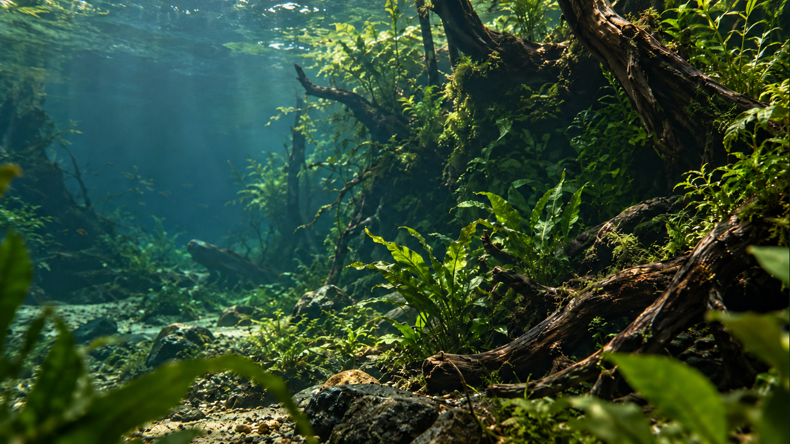
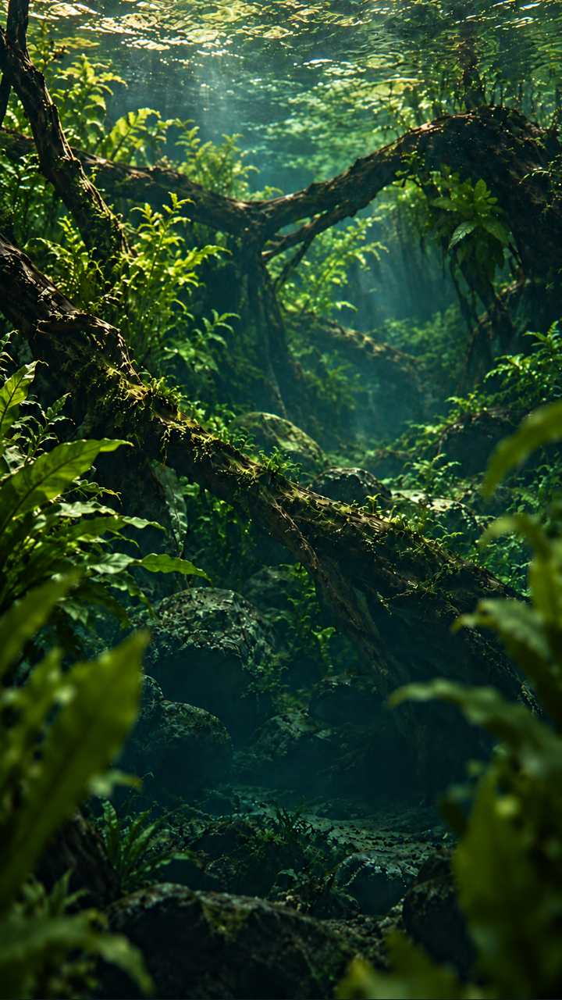

Each orientation uses one exact image as both first and last frame. At the join, the fish is hidden behind wood and plants. The intended middle of the future take shows natural swimming; motion and seamlessness have not been tested.

FISH · PLANTS · DRIFTWOOD
A world beneaththe surface.
Discover ornamental fish, aquatic plants and natural driftwood.
Composition overlay only. The shaded pocket beside the right root is inside the frame; open middle-distance water forms the proposed swimming corridor. Typography and navigation are separate from the PNG.

Independent portrait composition. The upper-middle root and leaves provide concealment; the lower region holds the proposed live copy.
Each pair below loads the same file twice. No separately generated closing picture is used.
Static review board. The decorative navigation, Menu and CTA are layout specimens. No form, video player or API request exists here. Both published CLI demos remain unchanged.